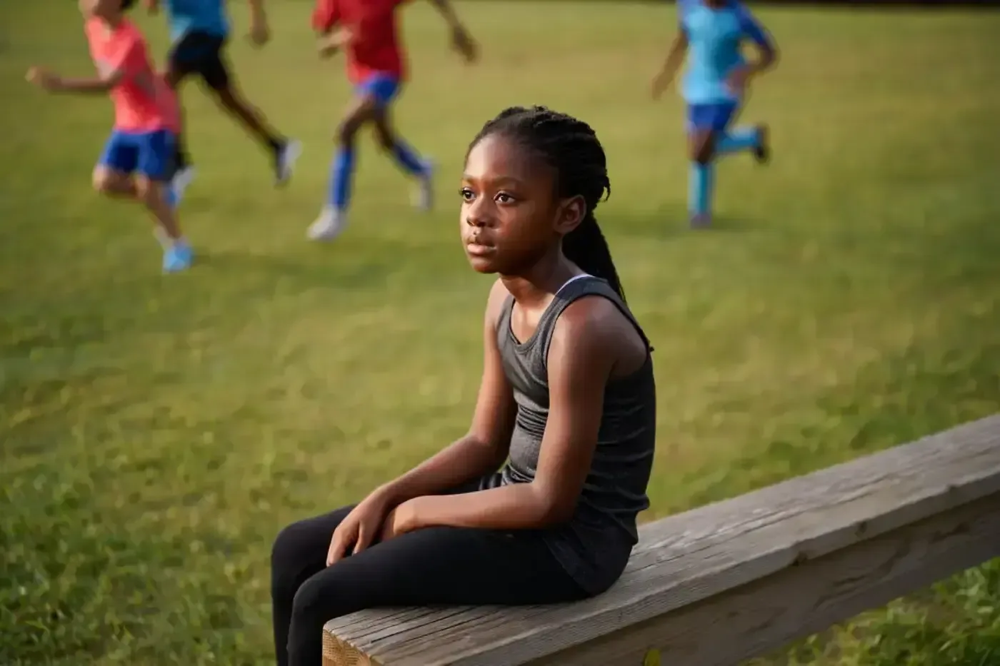
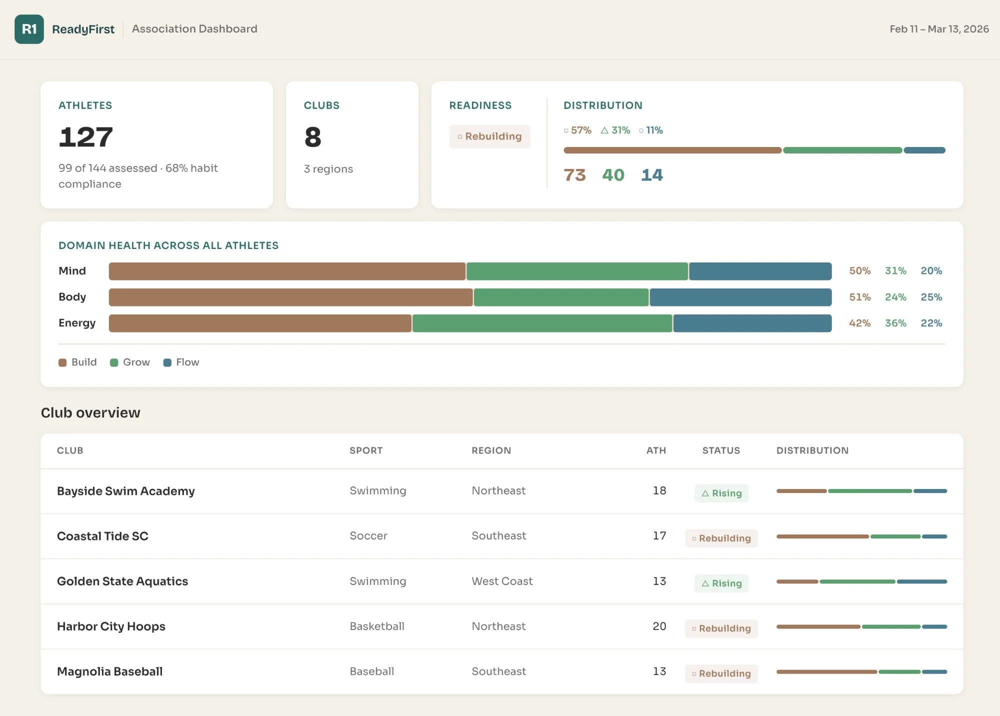
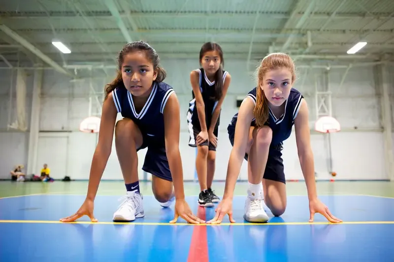

Youth athlete readiness
70% of young athletes quit by 13. Not because they weren't good enough – because no one could see they were struggling.
The first readiness monitoring system for youth athletes.
The first readiness monitoring system for youth athletes.
She loved soccer. Talked about it constantly. Then she stopped talking about it. Then she stopped going. By the time anyone noticed, she’d already decided.


I’ve worked with Olympic athletes for 25 years. The support systems they rely on – readiness monitoring, mental performance, recovery science – have never existed for the 40 million kids playing youth sport. That’s not a gap. It’s a design failure.
R1 is the fix.
Aggregate readiness intelligence across clubs, sports, and regions – updated in real time, visible for the first time.

Readiness distribution across all athletes Domain health: Mind, Body, Energy Club-level patterns and trendsAssociation-level dashboard – aggregate patterns, not individual surveillance. Every metric drawn from the daily check-in across Mind, Body, and Energy.
The first national readiness dataset – 100,000 athletes, 30+ sports, 2 years. Your gift builds the evidence base youth sport has never had.
Founding funders are being invited now, ahead of NGB enrollment this summer.
R1 moves that signal upstream – so you can help before they go quiet.
See how it works →Readiness-based adjustments for every athlete, every session. Clarity without burden.
See how it works →Aggregate readiness intelligence across your membership. The upstream signal your organization has never had.
See how it works →This is the fundable thesis: the first national readiness dataset disaggregated by gender, race, and sport type.
Girls’ participation in youth sport is at its highest point in over a decade – rising across every demographic. The study will generate the first national readiness dataset disaggregated by gender.
See the study design →
The pilot is live. NGB enrollment begins summer 2026. The study is funded entirely by a small number of philanthropic gifts – and the enrollment window opens once.


Every parent has felt it.
Every coach has watched it.
Every child has lived it.
R1 is the first tool that can see it.